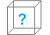

 Gamut Boxとは

Gamut Boxは、MCI（Media Control Interface）という技術を利用した音楽プレイヤーアプリです。
mp3, wav, wma, asf, midiに対応しており、歌詞ファイルの作成・表示、背景色や文字色の設定、
テーマの設定、更にはイントロクイズで遊ぶことも可能です。

Sea with Swimmer テーマ利用時
このように、テーマ設定利用時は背景の画像やシークバーが変わります。
テーマは1曲ごとに設定することが可能です。
このソフトはHSP（Hot Soup Processor）というスクリプト言語で作られてますので、
HSPさえ習得すれば誰でも改造して再配布することが可能です。
推奨動作環境
OS : Windows XP以降（Windows7, Windows10で動作確認済）
インターネット接続 : 必要
空き容量 : 65MB以上